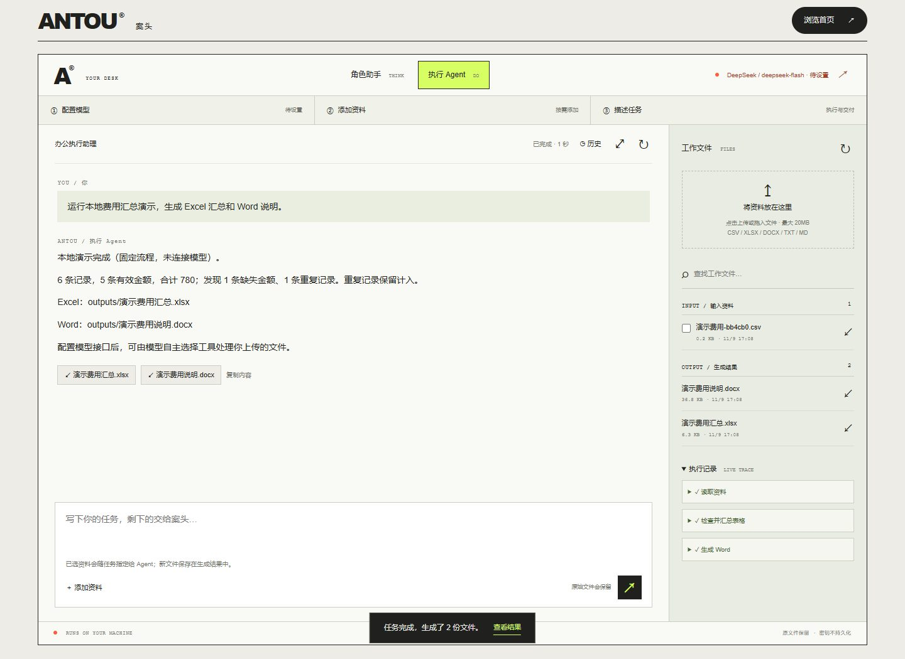

为什么做
办公任务需要的不只是聊天建议，还包括读取资料、核对数据、生成文件和知道执行到了哪一步。案头尝试把这些步骤放进一个可以连续执行、也能检查结果的工作台。
MAKE WORK FLOW. / Office Agent
让灵感往前走，把琐事留给案头。从讨论思路，到用真实工具生成可检查的办公文件。

办公任务需要的不只是聊天建议，还包括读取资料、核对数据、生成文件和知道执行到了哪一步。案头尝试把这些步骤放进一个可以连续执行、也能检查结果的工作台。
Windows / Python 3.9 下 47 项本地测试通过，覆盖工具调用往返、取消与断线、Key 作用域、Excel 精度、上下文预算和真正的应用进程重启续接。浏览器使用本机模拟上游验证流式正文、工具循环和历史恢复。
本页截图来自无需 Key 的固定本地演示，不把它描述成真实云端 Agent 演示。项目的开发、审查和验证由 AI 助手辅助完成，版本说明保留验证范围。
安装 Python 3.9 或更新版本，下载源码后双击 start.cmd。先运行演示确认环境，再在页面填写自己的模型 Key。Linux / macOS 可按 README 手动启动。
当前没有公网 Agent 后端。这个公开作品页展示项目与截图，不会索取模型 Key 或上传你的办公资料。
真实服务商联调与 Microsoft Office 应用内版式验收尚未进行。单个工具执行中不能强制打断，取消前已发出的模型请求仍可能计费。上下文预算采用保守估算，本机数据库当前不加密，尚不提供多用户公网服务。